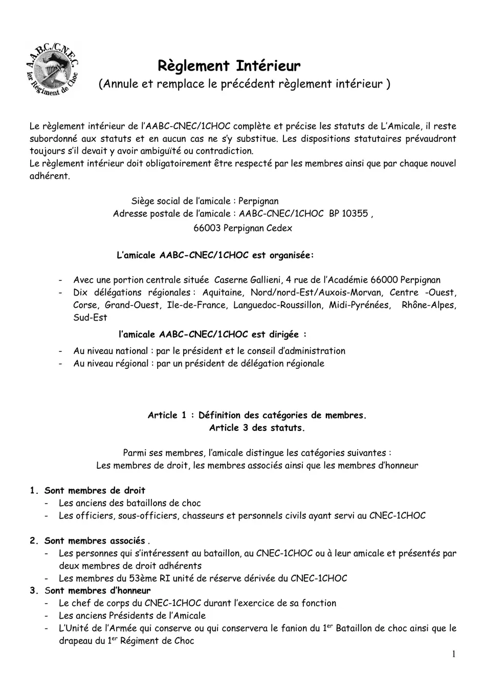
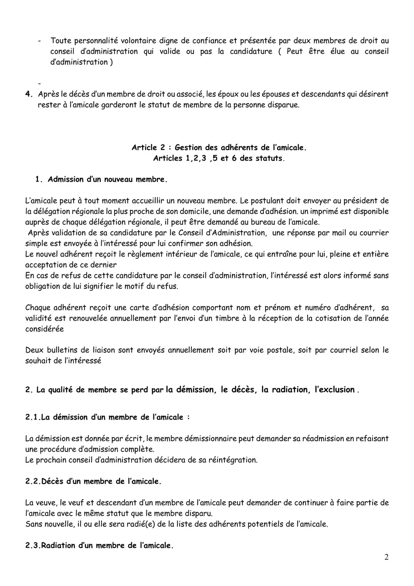
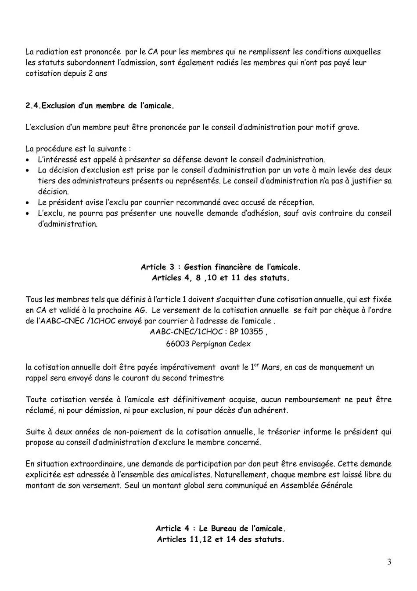
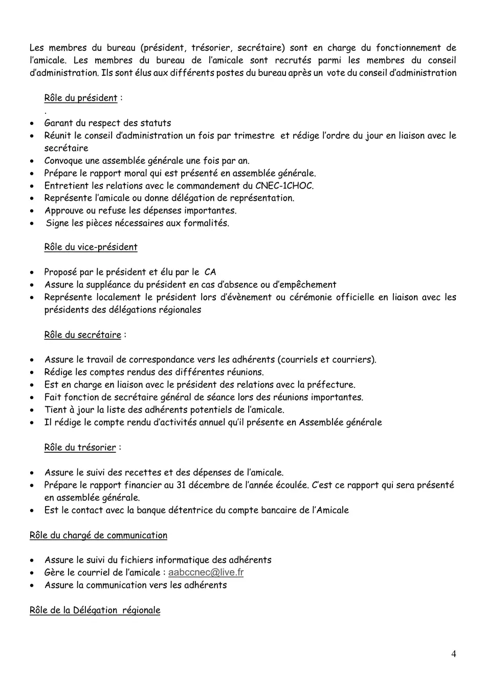
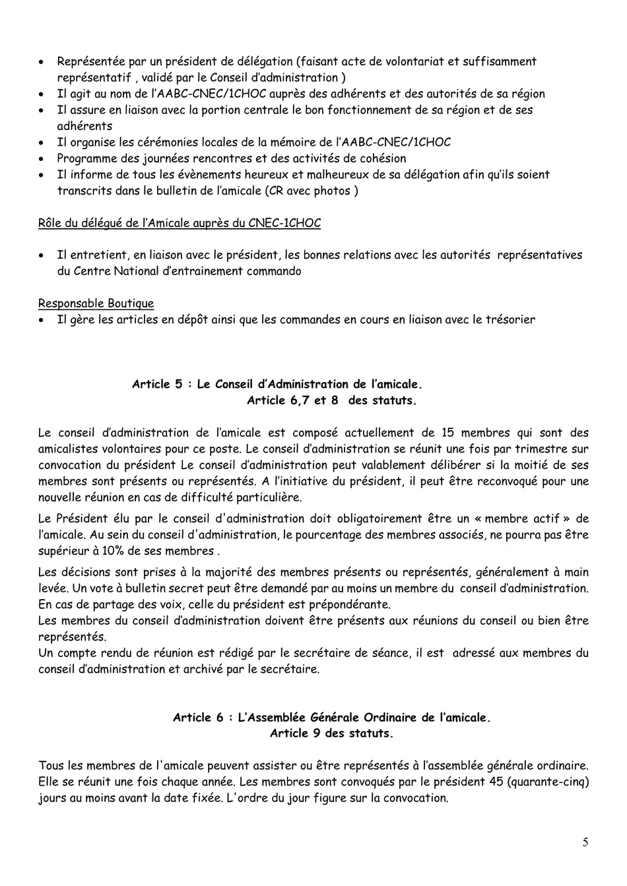
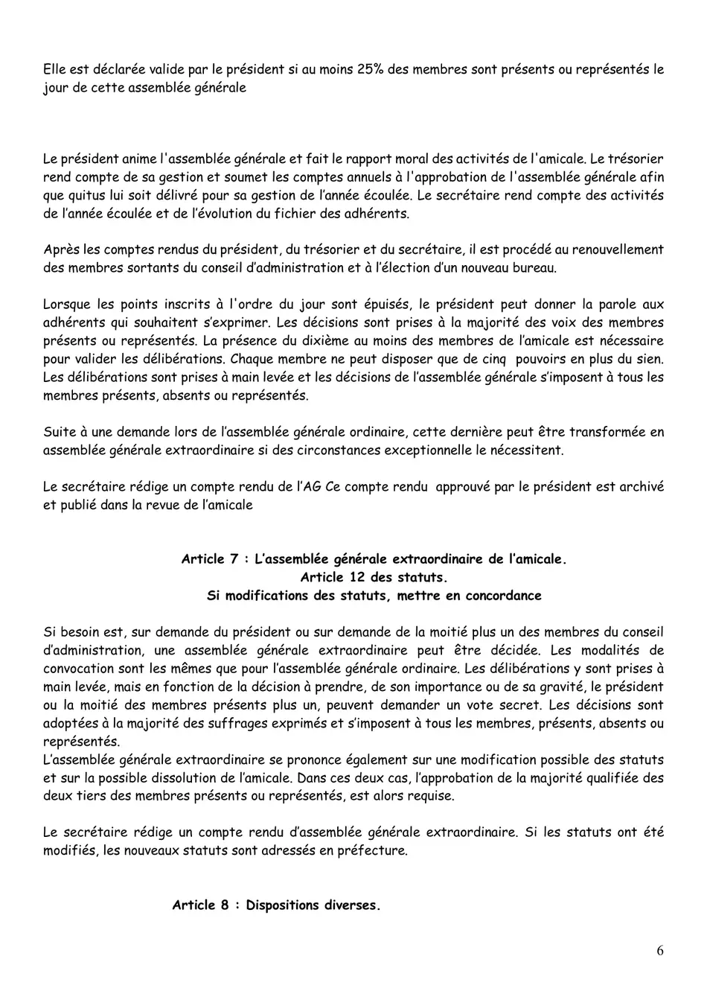
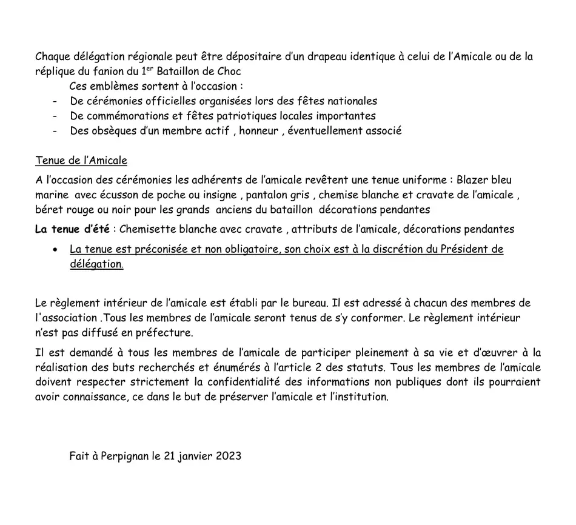

Règlement intérieur
Établi par le bureau et adressé à chaque adhérent. Il complète et précise les statuts, auxquels il reste subordonné : en cas d'ambiguïté ou de contradiction, les dispositions statutaires prévalent.
Organisation de l'amicale
Siège social : Perpignan. Adresse postale : AABC-CNEC/1CHOC, BP 10355, 66003 Perpignan Cedex.
- une portion centrale à la caserne Gallieni, 4 rue de l'Académie, 66000 Perpignan ;
- dix délégations régionales : Aquitaine, Nord/Nord-Est/Auxois-Morvan, Centre-Ouest, Corse, Grand-Ouest, Île-de-France, Languedoc-Roussillon, Midi-Pyrénées, Rhône-Alpes, Sud-Est.
L'amicale est dirigée au niveau national par le président et le conseil d'administration, et au niveau régional par un président de délégation.
Article 1 — Les catégories de membres
Membres de droit : les anciens des bataillons de choc ; les officiers, sous-officiers, chasseurs et personnels civils ayant servi au CNEC-1CHOC.
Membres associés : les personnes qui s'intéressent au bataillon, au CNEC-1CHOC ou à leur amicale, présentées par deux membres de droit adhérents ; les membres du 53e RI, unité de réserve dérivée du CNEC-1CHOC.
Membres d'honneur : le chef de corps du CNEC-1CHOC durant l'exercice de sa fonction ; les anciens présidents de l'amicale ; l'unité de l'armée qui conserve le fanion du 1er Bataillon de choc et le drapeau du 1er Régiment de choc ; toute personnalité volontaire digne de confiance présentée par deux membres de droit au conseil d'administration, qui valide ou non la candidature.
Après le décès d'un membre de droit ou associé, les époux, épouses et descendants qui désirent rester à l'amicale conservent le statut de la personne disparue.
Article 2 — Gestion des adhérents
Admission. Le postulant adresse une demande au président de la délégation régionale la plus proche de son domicile ; un imprimé est disponible auprès de chaque délégation ou du bureau. Après validation par le conseil d'administration, une réponse lui confirme son adhésion. Il reçoit alors le règlement intérieur, ce qui entraîne pour lui pleine et entière acceptation de ce dernier. En cas de refus, l'intéressé est informé sans que le motif ait à lui être signifié.
Chaque adhérent reçoit une carte d'adhésion portant ses nom, prénom et numéro d'adhérent ; sa validité est renouvelée chaque année par l'envoi d'un timbre à réception de la cotisation. Deux bulletins de liaison sont envoyés annuellement, par voie postale ou par courriel selon le souhait de l'intéressé.
Perte de la qualité de membre — par démission, décès, radiation ou exclusion.
- Démission : donnée par écrit. Le démissionnaire peut demander sa réadmission en refaisant une procédure complète ; le conseil d'administration décide de sa réintégration.
- Décès : la veuve, le veuf ou un descendant peut demander à continuer de faire partie de l'amicale avec le même statut que le membre disparu. Sans nouvelle, il ou elle est radié(e) de la liste des adhérents potentiels.
- Radiation : prononcée par le conseil d'administration pour les membres qui ne remplissent plus les conditions d'admission, ainsi que pour ceux qui n'ont pas payé leur cotisation depuis deux ans.
- Exclusion : prononcée par le conseil d'administration pour motif grave. L'intéressé est appelé à présenter sa défense ; la décision est prise à main levée par les deux tiers des administrateurs présents ou représentés, sans que le conseil ait à la justifier ; le président en avise l'exclu par courrier recommandé. L'exclu ne peut présenter de nouvelle demande, sauf avis contraire du conseil.
Article 3 — Gestion financière
Tous les membres s'acquittent d'une cotisation annuelle, fixée en conseil d'administration et validée à l'assemblée générale suivante. Le versement se fait par chèque à l'ordre de l'AABC-CNEC/1CHOC, envoyé à l'adresse de l'amicale.
La cotisation doit être payée avant le 1er mars ; en cas de manquement, un rappel est envoyé au cours du second trimestre. Toute cotisation versée est définitivement acquise : aucun remboursement ne peut être réclamé, ni pour démission, ni pour exclusion, ni pour décès.
Après deux années de non-paiement, le trésorier informe le président, qui propose au conseil d'administration d'exclure le membre concerné.
En situation extraordinaire, une demande de participation par don peut être adressée à l'ensemble des amicalistes. Chaque membre reste libre du montant de son versement ; seul un montant global est communiqué en assemblée générale.
Article 4 — Le bureau
Les membres du bureau sont recrutés parmi les membres du conseil d'administration et élus aux différents postes après un vote de celui-ci.
Le président est garant du respect des statuts. Il réunit le conseil d'administration une fois par trimestre et rédige l'ordre du jour avec le secrétaire, convoque l'assemblée générale une fois par an, prépare le rapport moral, entretient les relations avec le commandement du CNEC-1CHOC, représente l'amicale ou donne délégation, approuve ou refuse les dépenses importantes et signe les pièces nécessaires aux formalités.
Le vice-président, proposé par le président et élu par le conseil, assure la suppléance en cas d'absence ou d'empêchement et représente localement le président lors d'événements ou de cérémonies officielles, en liaison avec les présidents de délégation.
Le secrétaire assure la correspondance vers les adhérents, rédige les comptes rendus de réunion, est en liaison avec le président pour les relations avec la préfecture, fait fonction de secrétaire général de séance lors des réunions importantes, tient à jour la liste des adhérents potentiels et rédige le compte rendu d'activités annuel présenté en assemblée générale.
Le trésorier assure le suivi des recettes et des dépenses, prépare au 31 décembre le rapport financier présenté en assemblée générale, et est le contact de la banque détentrice du compte.
Le chargé de communication assure le suivi du fichier informatique des adhérents, gère le courriel de l'amicale et la communication vers les adhérents.
La délégation régionale est représentée par un président faisant acte de volontariat, suffisamment représentatif, validé par le conseil d'administration. Il agit au nom de l'AABC-CNEC/1CHOC auprès des adhérents et des autorités de sa région, assure en liaison avec la portion centrale le bon fonctionnement de sa région, organise les cérémonies locales de la mémoire, programme les journées rencontres et les activités de cohésion, et informe de tous les événements heureux et malheureux de sa délégation afin qu'ils soient transcrits dans le bulletin.
Le délégué auprès du CNEC-1CHOC entretient, en liaison avec le président, les bonnes relations avec les autorités du Centre national d'entraînement commando. Le responsable boutique gère les articles en dépôt et les commandes en cours, en liaison avec le trésorier.
Article 5 — Le conseil d'administration
Composé de quinze membres volontaires, il se réunit une fois par trimestre sur convocation du président et délibère valablement si la moitié de ses membres est présente ou représentée. Le président élu par le conseil doit obligatoirement être un membre actif ; la part des membres associés au sein du conseil ne peut dépasser 10 % de ses membres.
Les décisions sont prises à la majorité des présents ou représentés, généralement à main levée ; un vote à bulletin secret peut être demandé par au moins un membre. En cas de partage des voix, celle du président est prépondérante. Un compte rendu est rédigé par le secrétaire de séance, adressé aux membres du conseil et archivé.
Article 6 — L'assemblée générale ordinaire
Tous les membres peuvent y assister ou s'y faire représenter. Elle se réunit une fois par an ; les membres sont convoqués 45 jours au moins avant la date fixée, l'ordre du jour figurant sur la convocation. Elle est déclarée valide par le président si au moins 25 % des membres sont présents ou représentés.
Le président fait le rapport moral, le trésorier rend compte de sa gestion et soumet les comptes annuels à l'approbation de l'assemblée afin que quitus lui soit délivré, le secrétaire rend compte des activités et de l'évolution du fichier. Il est ensuite procédé au renouvellement des membres sortants du conseil d'administration et à l'élection d'un nouveau bureau.
Chaque membre ne peut disposer que de cinq pouvoirs en plus du sien. Les délibérations sont prises à main levée et les décisions s'imposent à tous les membres, présents, absents ou représentés. Sur demande, l'assemblée peut être transformée en assemblée générale extraordinaire si les circonstances l'exigent. Le compte rendu, approuvé par le président, est archivé et publié dans la revue de l'amicale.
Article 7 — L'assemblée générale extraordinaire
Elle peut être décidée sur demande du président ou de la moitié plus un des membres du conseil d'administration, selon les mêmes modalités de convocation. Les délibérations sont prises à main levée, mais un vote secret peut être demandé selon l'importance ou la gravité de la décision. Elle se prononce également sur une modification des statuts et sur la dissolution de l'amicale : dans ces deux cas, la majorité qualifiée des deux tiers des présents ou représentés est requise. Si les statuts sont modifiés, les nouveaux statuts sont adressés en préfecture.
Article 8 — Dispositions diverses
Emblèmes. Chaque délégation régionale peut être dépositaire d'un drapeau identique à celui de l'amicale, ou de la réplique du fanion du 1er Bataillon de choc. Ces emblèmes sortent à l'occasion des cérémonies officielles des fêtes nationales, des commémorations et fêtes patriotiques locales importantes, et des obsèques d'un membre actif, d'honneur ou éventuellement associé.
Tenue de l'amicale. Blazer bleu marine avec écusson de poche ou insigne, pantalon gris, chemise blanche et cravate de l'amicale, béret rouge ou noir pour les grands anciens du bataillon, décorations pendantes. Tenue d'été : chemisette blanche avec cravate, attributs de l'amicale, décorations pendantes. La tenue est préconisée et non obligatoire ; son choix est à la discrétion du président de délégation.
Le règlement intérieur est établi par le bureau et adressé à chacun des membres, qui sont tenus de s'y conformer. Il n'est pas diffusé en préfecture. Il est demandé à tous de participer pleinement à la vie de l'amicale et d'œuvrer aux buts énumérés à l'article 2 des statuts, et de respecter strictement la confidentialité des informations non publiques dont ils pourraient avoir connaissance, afin de préserver l'amicale et l'institution.
Fait à Perpignan le 21 janvier 2023 — Jean-François Audoyer, président · Pierre Villalongue, secrétaire.
Cotisation avant le 1er mars
Deux années de non-paiement entraînent la radiation.
Convocation à 45 jours
Quorum : 25 % des membres. Cinq pouvoirs au maximum par membre.
15 membres
Réunion trimestrielle. Au plus 10 % de membres associés.
Préconisée, non obligatoire
Blazer bleu marine, pantalon gris, chemise blanche, cravate de l'amicale.
21 janvier 2023
Annule et remplace le précédent règlement intérieur.
Le document original
7 pages · cliquez pour agrandir






Les sept pages en PDF, à imprimer ou à conserver.
Télécharger le PDF
Le bloc des signatures manuscrites a été retiré de la dernière page, en ligne comme dans le PDF : une signature reproduite sur internet peut être décalquée et réutilisée. L'original signé est conservé au siège.